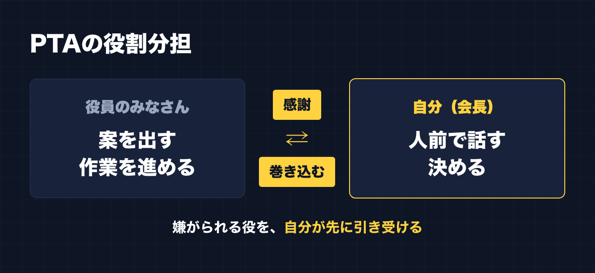

1. タイトルをコピーして、note のタイトル欄に貼る
2. 「本文1をコピー」から順にコピーし、note の本文に貼る
3. 青いラベルの位置に、images フォルダの同じ名前の画像を入れる（本文には貼られません）
※ 見出しが普通の文字になった場合は、その行を選んで「大見出し」を設定してください
私は今、PTA会長をやっています。
会社員で、4人の子どもの父親で、帰宅後や休憩のすきまに副業をしています。そこに PTA 会長が加わっている、という状態です。
こう書くと、何でも自分で抱えてこなしている人のように見えるかもしれません。実際は逆です。PTA 会長をやってみて、いちばんはっきり分かったのは、「一人じゃ何もできない」ということでした。
この記事は、PTA の話をきっかけに、自分が発信や副業をどうやっていきたいかを書いたものです。ノウハウの記事ではありません。
案を出すのも、手を動かすのも、自分ではない
PTA の仕事で、案を考えたり、実際の作業を進めたりしているのは、役員の保護者のみなさんです。
会長である私がやっているのは、別のことです。
- 人前で話す
- 決める
この2つです。
どちらも、多くの人がやりたがらない役です。人前に立って話すのは負担が大きいし、決めるということは、その結果に責任を持つということでもあります。だからこそ、そこは自分が引き受けると決めています。
嫌がられる役を、先に引き受ける
PTA で意識しているのは、みんなが嫌がる役を率先して引き受けることです。
会長だから偉いわけではありません。案も作業も、自分一人では回せません。役員のみなさんが動いてくれて、はじめて形になります。
そのうえで自分にできるのは、「嫌な役は自分がやる」という姿を見せることだと思っています。先に一歩出る人がいると、まわりも動きやすくなる。人を巻き込むというのは、お願いして回ることより、まず自分が引き受けるところから始まるのだと考えています。
そして、その根っこにあるのは感謝です。動いてくれる人がいるから、何かが前に進みます。

副業も、実は一人でやっていたつもりだった
この考え方を、副業に当てはめてみます。
副業を始めたころ、帰宅後に1〜2時間やると決めていました。でも、仕事から帰ると疲れていて、できない日が続きました。できない自分に落ち込んで、「こんなにできないのは自分だけだ」と感じていました。
振り返ると、決めた時間どおりに全部を自分でこなそうとしていたのかもしれません。
今は、昼休みや休憩の合間の5分、10分に、時間を決めずにやれるときにやっています。そう変えてから、気持ちが楽になって、続いています。作業の面でも、リサーチや下書きは AI に手伝ってもらい、人間味の部分だけ自分で足すようにしています。
全部を一人で抱えない。PTA で実感したことと、根っこは同じだと思っています。
発信でやりたいのは「巻き込む」こと
発信も、一人では何もできません。
読んでくれる人、反応してくれる人がいて、はじめて発信になります。どれだけ書いても、誰にも届かなければ、ただの独り言です。
だから、発信で大事にしたいのは、PTA と同じことです。
- 読んでくれる人への感謝を忘れない
- 自分から先に出す。うまくいかなかったことも含めて
- 相手が一歩だけ動けるように、ハードルを下げる
「すごい人が教えてあげる」という発信ではなく、「一緒にやりませんか」と巻き込む発信でありたいと思っています。
実際に、別で運用しているアカウントで、反応が大きく伸びた投稿がありました。「〇〇部、発足します」と呼びかけて、「〜でいい」と参加のハードルを下げ、最後に「この言葉でコメントしてください」と、書く言葉まで指定した投稿です。ふだんの投稿ではほとんどつかないコメントが、1,306件集まりました。
教える投稿ではなく、参加してもらう投稿でした。一人で語るより、読んだ人が一歩だけ動ける場所を用意したほうが、人は集まってくれる。PTA で見てきたことと、つながる話だと思っています。
だから、Zoom で売らないと決めている
これには、もう1つ理由があります。
私はこれまで、副業の講座にたくさんお金を払ってきました。ある高額講座では、Zoom で1〜2時間話したあとに高額な商品を勧められ、断ると「じゃあ諦めるんですね」と言われました。これが嫌でした。
人を巻き込むというのは、相手を追い込むことではありません。
だから自分は、Zoom や対面で売ることはしないと決めています。投稿や、ページや、動画や、無料で試せるもので中身を見てもらって、それで判断してもらう。合わないと思ったら、そのまま離れてもらってかまわない。そういう形にしています。
嫌な役は自分が引き受けて、相手には押しつけない。PTA で大事にしていることを、発信や副業でも同じようにやりたいと考えています。
一人じゃ何もできない、から始める
「一人じゃ何もできない」は、弱音のように聞こえるかもしれません。
でも自分にとっては、出発点です。一人でできないと認めると、人に頼れるし、感謝できるし、自分がやるべき役もはっきりします。PTA では、それが「人前で話す」「決める」でした。
副業と発信では、まだ成果が出ていません。脱サラも遠いです。それでも、決めた時間に全部こなそうとしていたころより、今のほうが続いています。
同じように、会社員をしながら何かを始めようとしている人がいたら、全部を一人でやろうとしなくていい、と伝えたいです。
最後に
ここからは宣伝です。
公式LINEでは、「特典」と送っていただくと、LINE限定のプロンプト5本をお届けしています。
https://lin.ee/RzyA13P
「副業ドラフト」は、AI の質問に答えるだけで、副業に使える強みの棚卸しと Threads の下書きを作るツールです。Threads の下書き3本までは無料で使えます。Zoom も面談もありません。試してみて、合うかどうかをご自身で判断してください。
https://note-threadssf.onrender.com
Threads では、こうした試行錯誤を日々発信しています。
https://www.threads.com/@shachiku_mao
最後まで読んでいただき、ありがとうございました。